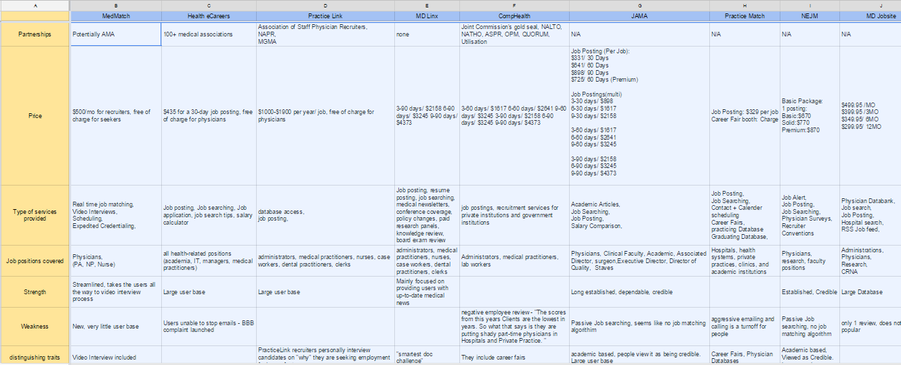
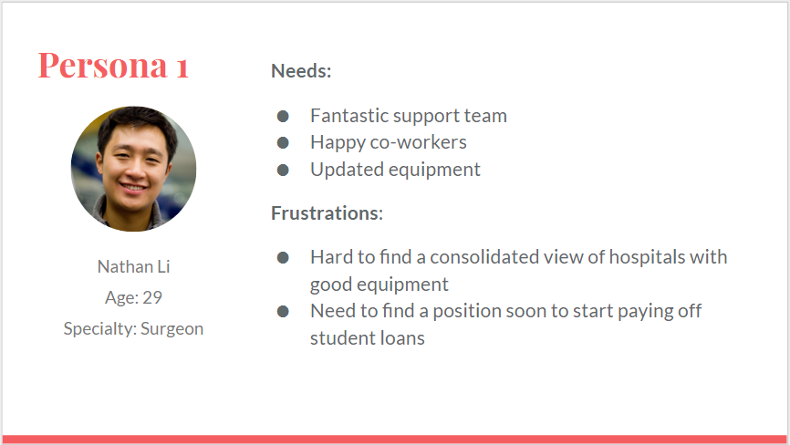
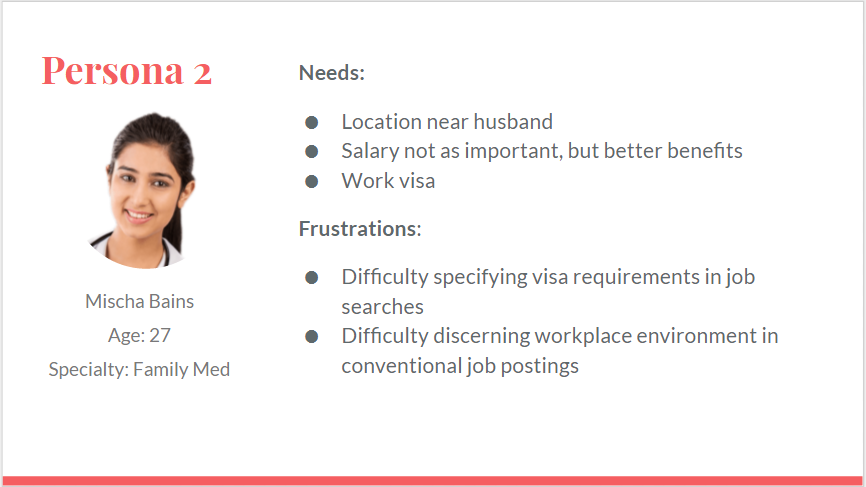
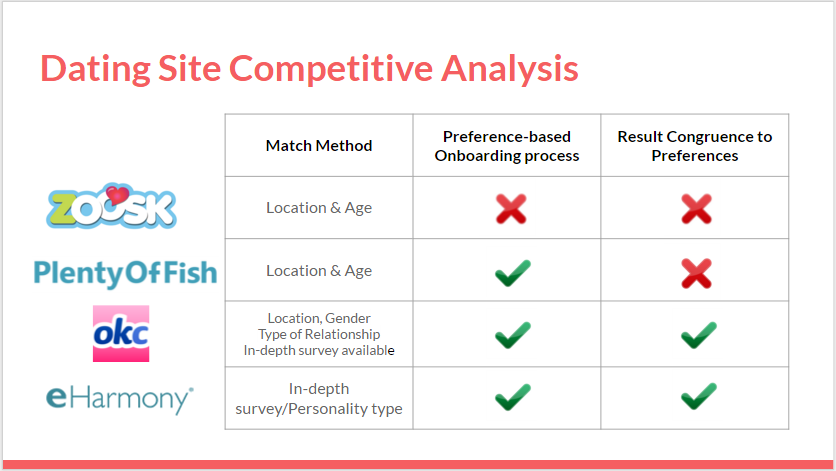
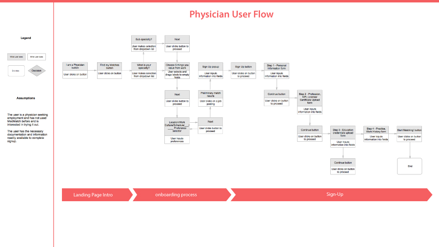
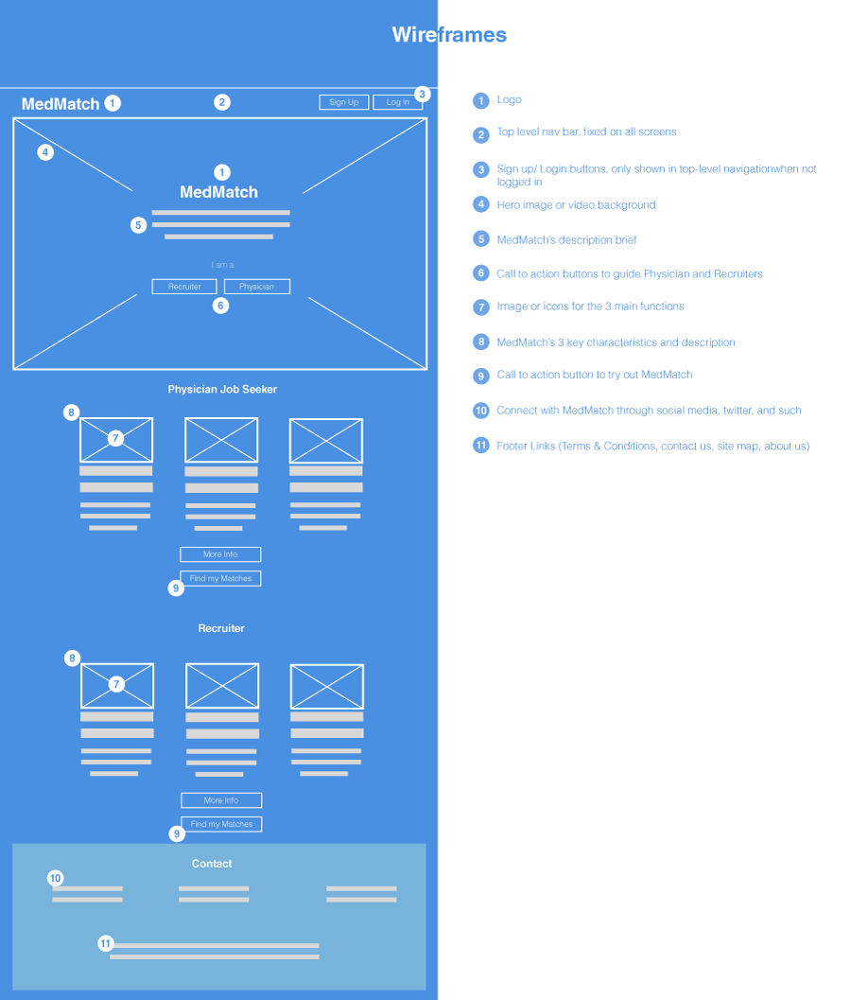
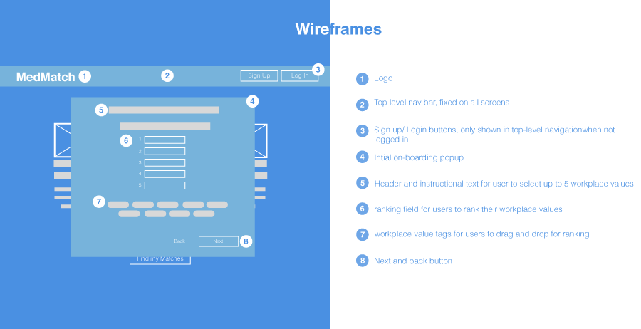

MedMatch is a online platform that helps physicians find potential positions as well as helping hospital recruiters find potential physicians to their position openings. The platform streamlines the the entire process from job searching to initial web interview.
I worked on this project as the UX designer, in collaboration with another UX Designer along with my project director and the production team.
Approach
We used the Google 5 Day Design Sprint, Agile Methodology, as well as Design Thinking to approach the online learning project.
Tools Methods
Prototypes (Axure, paper prototype), user interviews, surveys, competitive analysis, personas, task-flow, SME interviews, usability testing, heuristic evaluation
Project Brief
Our client came to us expressing concerns about the UI and UX of his product. He stressed that he wanted the process to be as simple and intuitive as an online dating site, and hoping to stand out from other competitors with the simplification and streamlined process. The main challenge was addressing and prioritizing doctor's different needs to generate accurate results tailored to the user. We had a total of 3 weeks to work on the project.
Research
Domain Exploration
I started our domain research with competitive analysis to famaliarize ourselves with the existing physician job matching industry.

Key Findings: We discovered that despite there are a lot of existing medical job placement platforms, none included the intial interview, as well as some sort of system to prioritize the results beyond using position titles.
Heuristic Evaluation
One of the hardest challenges for this project was to figure out a managable area to prioritize during the short 3 weeks time frame. To set the scope, we decided to start with a heuristic evaluation to determine the most critical issues of the website. Including my partner and I, there were a total of 4 evaluators. We then arranged the results from the most critical issue on the left to the least on the right.
Key Findings: We determined that among of the most critical issues was the lack of help & documentation to help the users understand the platform.
User Interviews
After the heuristic evaluation, my partner and I carried out some user interviews. We decided to focus on the physician side because a large physician user base will help covert hospital recruiters to using MedMatch, which drives MedMatch's revenue.
The main objective of our interviews were to look for opportunities for improvement with the existing application process, also explore any pre-existing barriers for users to adapting to an automated application process.
Key Findings: Here are some patterns observed among the typical users I’ve observed from the affinity diagram.
Users need a system to organize their priorities when searching for job opportunities.
For the users to trust the platform, they need to understand how the system works.
Different doctors have different needs. There needs to be a way to address different needs.
Synthesize
Personas
Following the research and the interviews, I made two personas to keep our average user's goals in mind throughout my design.

Key Findings: Nathan’s primary concern as a surgeon is finding cutting edge equiptments and a fantastic support team.
taylor

Key Findings: Mischa’s primary concern is visa sponsorship as well as work location close to her family.
Problem Statement
From the research, I created a problem statement for our project.
“The users need a system to prioritize their preferences when searching for hospitals because different types of plysicians have different professional needs to be addressed.”
Design Principles
Here are the 3 central design principles that our platform will maintain throughout.
1. Transparency of information should be evident throughout the product
2. Results should be tailored to the users’ needs and address their priorities
3. The system should be simple and fluid to help the users maneuver through the complicated process with ease
Ideate
Brainstorm
With our design principles and problem statement in mind, we came to the conclusion that using an onboarding process that can afford users to input multiple needs and system to rank their importance would help generate results that are more tailored to the needs of the users, as well as help the users trust the system more because they understand where the results are coming from.
Because the client referred to the simplicity of dating website’s models several times, I decided to do a quick comparison on major dating websites’ onboarding process. I was able to cross this off as “work required research” to my girlfriend.

Key Findings: The on-boarding process should be detailed enough to help the users understand where the results are from. Grasping just enough data to generate personalized results, and not overly long so the user lose interest was the trickiest part.
User Task Flow
To really understand each-step the users will be experiencing, I created a task flow to show the different steps the users will be going through.

Wireframing
After the task flow, I converted the onboarding ideas into wireframes. First, I redesigned the landing page into a more standard layout than the current two columns. I then added in the intial onboarding slides. Below are just two quick examples of the the wireframes, the final results will be in the prototype.


Key Findings: I designed a fast 5-step onboarding session to gather the user’s priority and their ranking of importance, then quickly generates some results for the users as a “trial run” so the users understand the system and feel more comfortable signing up and submit their NRA number.The users will be able to see the results listing with some details, but will not be able to see the specific hospital name until they sign up.
Prototype & Iterate
Axure Prototype
My prototype focused on an intial onboarding session that gathers some quick information for the users priorities and give them a result, then giving them the option to fine tune their results through additional filters later so they can alter their priorities for more accurate results if they wish. Once they understand how the platform works, then then can go ahead and sign up and fill in the personal information.
Note: the prototype assumes the user's role as a physician
Key Findings: The general feedback expressed that the idea of being able to quickly see some tailored results before they have to give up any personal information was an improvement on current platforms. Having understand the platform and how it functioned first helped the users trust in the product to produce more fitting results.
My partner and I created two Axure prototype with same ideas but different executions. We then A - B tested the two sets of prototypes. The general results from the testing was more favored towards my approach, so I added elements from my partner's prototype with mine as foundation.
Results
To determine the effectiveness of the onboarding session we designed, we checked our user conversion rate percentage increase after the implementation of the redesigned onboarding session. The result is presented below.


 Projects
Projects